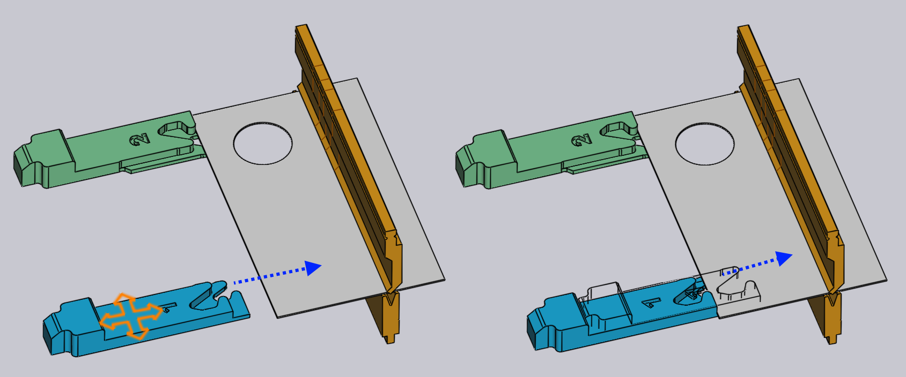

Editar os encostos traseiros
As posições do encosto traseiro para cada dobra podem ser ajustadas apenas clicando no encosto traseiro - isso abre o painel do Encosto, que é mostrado ao lado.
O painel do Encosto
-
Use o seletor Encosto traseiro para selecionar o encosto que deseja editar (também basta clicar no encosto, e o painel é exibido para editar aquele encosto). Se você clicar no outro encosto com Shift+Clique, poderá editar as configurações comuns de ambos os encostos juntos.
-
As entradas Z, X e R são usadas para ajustar a posição dos encostos em três dimensões. Para a maioria das prensas dobradeiras, os eixos são os indicados na imagem abaixo:[1]

-
O seletor Posição de manipulação é usado para engatar uma superfície diferente do dedo de encosto para a peça. O conjunto de superfícies disponíveis depende da máquina, e nem todas as superfícies podem ser aplicáveis a todas as dobras (TecZone Bend irá informar quando uma determinada superfície não puder ser usada). A imagem abaixo mostra diferentes superfícies sendo usadas:

-
A configuração Retorno é usada para definir a distância de retração do encosto antes de dobrar. Para algumas dobras, o encosto deve ser retraído (na direção +X) por alguma distância depois que a peça é apertada pelo punção, mas antes de ser dobrada (para evitar uma colisão). Esta configuração é usada para controlar a distância de retração. Quando você está editando isso, TecZone Bend na verdade retrai o encosto pela quantidade especificada como na pré-visualização, para que você possa julgar se a retração será suficiente.
-
Use o botão Calcular automaticamente para pedir ao TecZone Bend para calcular uma posição automaticamente para o encosto especificado. Em geral, o TecZone Bend terá várias possibilidades de encosto e clicar repetidamente no botão Autoposicionar irá alternar através dessas possibilidades. Para voltar ao padrão, feche o painel do encosto, clique no encosto novamente e, em seguida, clique em Autoposicionar; a primeira posição então selecionado é o padrão (que também seria o resultado do autosequenciamento e ferramental).
-
Use o botão Virar a peça para inserir o outro lado da peça na máquina e calcular o encosto novamente. Isso é semelhante ao botaço de Peça invertida no painel de dobra.
-
Use os botões Continuar e Voltar para ir para a dobra anterior ou seguinte e editar as posições dos encostos dessa dobra.
Avançado
Aqui estão algumas operações mais avançadas com os encostos:
Edição de encosto para dobras múltiplas
É possível editar as posições do encosto para várias dobras ao mesmo tempo.
Para fazer isso, primeiro selecione várias dobras através de Shift+Clique nos números de dobra no navegador de dobras. Em seguida, clique em um encosto. A imagem ao lado mostra as posições de encosto para as dobras 1, 2 e 4 sendo editadas em conjunto:

Neste exemplo, todas as dobras usam a mesma posição Z para o encosto, e editar esta posição ajustará a posição Z para todos os encostos. Os valores de posição X e R estão em branco, uma vez que são diferentes para cada dobra. No entanto, você pode digitar um valor X ou R e ele será aplicado para todas as dobras.
Em geral, você raramente precisará usar essa funcionalidade. O painel do medidor está ciente das limitações de uma prensa dobradeira específica e aplicará todas as restrições necessárias. Por exemplo, as posições R dos dois encostos devem ser o mesmo para algumas máquinas (não possuem eixos R1 e R2 independentes) - o TecZone Bend vai garantir que quando você edita a posição R para um encosto, o outro é também ajustado imediatamente para rastrear.
Para algumas máquinas com sistemas de encosto de 2 eixos, as posições Z dos encostos são definidas manualmente e normalmente não mudam de dobra para dobra (uma vez que isso envolveria o operador ter que ajustar manualmente os encostos após cada dobra). Para tais máquinas, quando a posição Z é definida para uma dobra, ela é definida igualmente para todas as dobras. O status de colisão, o status engatado do encosto, etc., são calculados para todas as dobras imediatamente, por isso é muito fácil encontrar posições comuns Z1 e Z2, que pode ser aceitável para todas as dobras.
Arrastamento de encosto
Embora as posições exatas de encosto possam ser definidas digitando os valores Z, X e R, muitas vezes é mais simples posicionar os encostos apenas arrastando-os para entrar em contato com a peça.
-
Clique uma vez para selecionar o encosto que deseja arrastar.
-
Clique no encosto selecionado e arraste-o para posicioná-lo. Dependendo do ponto de vista, o encosto é arrastado ao longo de um plano horizontal ou vertical.
Normalmente, você começa com o encosto longe da peça e arrasta-o em direção à peça até encostar. Você pode continuar arrastando ainda mais (empurrando o encosto para dentro da peça), e uma estrutura de arame continuará se movendo, mas o encosto real para quando toca a peça.

A imagem acima mostra isso em operação - começamos a arrastar o encosto para a chapa na direção indicada pela seta. Assim que o encosto tocar a chapa, ele para, e apenas uma representação de estrutura de arame continua se movendo (para mostrar para onde você está tentando arrastar o medidor). Isso facilita posicionar o medidor para que ele esteja apenas tocando a peça sem lacunas e sem quaisquer colisões.
Nesta imagem acima, estamos olhando para o encosto de um ponto de vista que está próximo de cima para baixo. Portanto, o medidor se move no plano XZ e o valor R do encosto é mantido constante. Se você girar a visualização para uma vista mais extrema, o encosto se move no plano XR, e o valor Z será constante.
Engates ao arrastar
Ao arrastar o encosto, é fácil posicionar com precisão os encostos quando você está usando uma das superfícies do tipo Stop. Quando você estiver usando uma das Superfícies do tipo braçadeira, isso é mais difícil, já que você tem que envolver ambas as superfícies de um dedo de fixação contra a peça.
O TecZone Bend facilita isso, fornecendo encaixes automáticos quando o encosto está próximo a uma possível posição de fixação. Para usar este mecanismo, primeiro gire a visualização, então você está vendo os encostos de cima para baixo. Em seguida, arraste os encostos para que o canto você deseja fixar encaixe junto à abertura dos dedos:

A imagem acima mostra uma operação de fixação em andamento. Enquanto arrastamos os encostos perto de uma posição de fixação, eles se encaixam na posição da braçadeira 1 (veja a imagem acima, no centro). Arrastando ainda mais, os encostos se encaixam na posição da braçadeira 2 (veja a imagem acima, à direita). Observe que o valor R do medidor é ajustado automaticamente para cima ou para baixo à medida que nos movemos para esses diferentes encaixes de fixação.